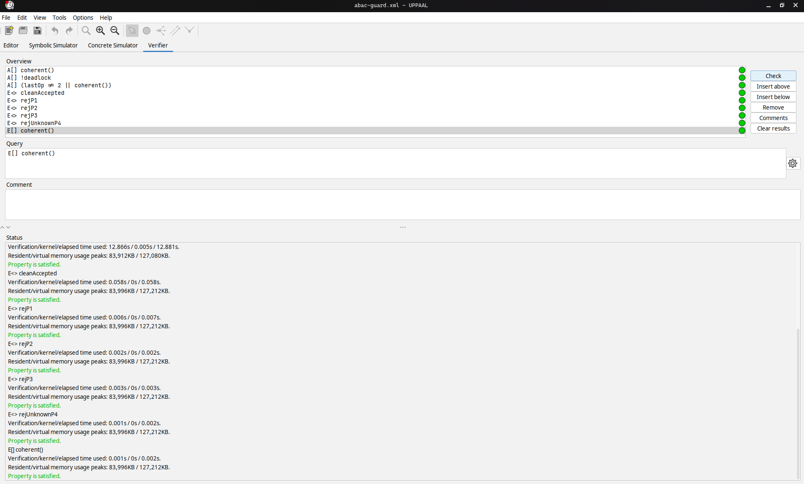

Facultad de Ingeniería de Producción y Servicios
Escuela Profesional de Ingeniería de Sistemas
FERIA DE PROYECTOS 2026
“Verificación formal de coherencia en políticas ABAC”
Docente asesor: Molina Barriga, Maribel
¿Qué es ABAC y por qué falla manualmente?
Así decide ABAC (NIST SP 800-162)
1. Cada solicitud describe 4 dimensiones
Sujeto:
role=medic, dept=er, clearance=3Recurso:
type=record, sensitivity=4Acción:
name=read | Entorno: hour=22, emergency=true2. Las reglas aprueban o deniegan según atributos
Permit where subject.role == medic && subject.clearance >= 4 && resource.sensitivity <= 3 && action.name == readDeny where action.name == write && resource.sensitivity >= 4 && subject.clearance <= 23 fallas reales al editarlas a mano
-
1. Emergencia vs horario (Contradicción): una regla da paso si
emergency == truey otra bloquea sihour >= 18; en urgencias nocturnas chocan. -
2. Umbral imposible (Regla muerta): exigir
clearance > 5 && clearance < 2sobre[1..5]crea una regla que jamás se cumple. -
3. Regla tapada (Sombreado): agregar
role == medic && dept == cardiobajorole == medicvuelve inútil la regla específica.
El reto: en
schema-v1 hay 64 800 combinaciones posibles; probar casos sueltos deja conflictos ocultos hasta producción.
Propiedades de coherencia (P1–P4)
P1 — Consistencia (sin contradicciones)
Ninguna solicitud puede activar una regla Permit y una Deny al mismo tiempo.
Evita choques:
Permit emergency==true vs Deny hour>=18.Regla formal: para toda
q, ¬(Permit(q) ∧ Deny(q))P2 — Satisfacibilidad (sin reglas muertas)
Toda regla debe poder aplicarse en al menos una solicitud válida del esquema.
Detecta imposibles:
clearance > 5 && clearance < 2.Regla formal: para toda regla
r, existe q donde dispara rP3 — No sombreado (sin reglas tapadas)
Cada regla debe decidir al menos un caso por sí sola (detecta redundantes y duplicadas).
Detecta exceso:
medic && cardio tapada por medic.Regla formal: para toda
r, existe q decidida solo por rP4 — Validez de esquema
Toda regla usa solo atributos declarados, operadores válidos y valores en rango.
Frena errores: atributos desconocidos o enteros fuera de cota.
Regla formal: para toda
r, ValidRule(r, Σ)
Política coherente: cumple
P1 ∧ P2 ∧ P3 ∧ P4 a la vez — propiedad que se garantiza tras cada cambio aceptado.
Objetivos y alcance del proyecto
Objetivos del proyecto
- Meta general: construir un verificador ABAC demostrado en Dafny y validado en UPPAAL, ejecutable sin motores externos.
- OE1 — Modelo formal: especificar reglas ABAC y las 4 propiedades P1–P4 sobre dominios finitos.
- OE2 — Cambios seguros: probar que agregar, editar o borrar reglas nunca rompe la coherencia y muestra el testigo exacto al fallar.
- OE3 — Protocolo validado: comprobar en UPPAAL ausencia de bloqueos y alcance de veredictos en un caso fijo.
Alcance y fragmento decidible
- Atributos cubiertos: listas (
Enum), booleanos y enteros acotados en las 4 familias NIST SP 800-162. - Operaciones: adición (
TryAdd), edición (TryUpdate), baja (TryRemove), lotes y evaluación lineal (Evaluate). - Extracción sin SMT: el núcleo probado compila directo a JS detrás de una frontera mínima de entrada.
- Delimitación por decidibilidad: esquemas discretos cerrados contra literales y cotas protectoras (
TooLarge).
Comparativa con trabajo previo
| Enfoque | Paradigma formal | SMT en ejecución | Guarda inductiva | Testigo | Ejecución |
|---|---|---|---|---|---|
| XACML (Turkmen) | Traducción SMT | Requerido (Z3) | No | Modelo SMT | Servicio externo |
| ABAC (Liu et al.) | Partición y grafos | No | No | Par de reglas | Algoritmo local |
| AWS Zelkova / BPA | Reducción SMT | Requerido (Z3) | No | Contramodelo SMT | Nube AWS |
| Cedar (Cutler) | Verificación (Lean) | Opcional | No | Diagnóstico sintáctico | Binario Rust / WASM |
| Mohawk / ARBAC | SMT / Reachability | Requerido | No (a posteriori) | Traza de transición | Herramienta CLI |
| Verificador propuesto | CbC (Dafny + UPPAAL) | Ninguno | Sí (AddPreserves) | Tupla (req, rᵢ, rⱼ) | JS compilado desde Dafny |
Metodología CbC y herramientas formales
Corrección por Construcción (5 fases)
- Fase 1 — Modelado: definir reglas, significado y todas las solicitudes (
AllRequests) en Dafny. - Fase 2 — Pruebas formales: demostrar P1–P4, preservación ante cambios y testigos reales.
- Fase 3 — Model checking: explorar en UPPAAL todos los caminos sobre un caso fijo (9 consultas).
- Fase 4 — Extracción: compilar el núcleo probado a JavaScript detrás de una frontera mínima.
- Fase 5 — Casos guiados: trazar paso a paso políticas clínicas y confirmar la frontera.
Herramientas formales y estándares
- Dafny 4.11: especificación matemática, prueba de 114 metas y compilación directa a JS.
- Z3 (4.12+) y cvc5 (1.0+): motores lógicos usados solo en tiempo de diseño.
- UPPAAL 5.0: exploración exhaustiva de estados y verificación de 9 consultas TCTL.
- Estándares ABAC: NIST SP 800-162, NIST SP 800-192 y OASIS XACML 3.0.
- Capa anfitriona (TS / Node / Bun): lectura de reglas y ejecución del módulo extraído.
Arquitectura y frontera de ejecución

-
1. Núcleo formal (Dafny): los 5 módulos operacionales (
Schema,Syntax,Eval,Coherence,Transition) compilan a JS;BoundedCheckqueda solo para verificación finita. -
2. Frontera mínima de entrada: valida el esquema, traduce texto a reglas y formatea testigos (
explain). Nunca decide coherencia. - 3. Ejecución sin SMT externo: toda decisión en producción proviene directo del código verificado en Dafny.
Fases de verificación (P1 a P4)

Orden en
CheckCoherent: revisa en secuencia P1 → P2 → P3 → P4 y se detiene al hallar el primer contraejemplo mínimo.
¿Cómo garantiza Dafny la corrección?
Transition.dfy — Guarda y demostración
function TryAdd(R: Ruleset, r: Rule, schema: Schema): AddResult {
var w := CheckCoherent(R + [r], schema);
if w.NoWitness? then Accepted(R + [r]) // 1. Solo entra si pasa P1..P4
else Rejected(w.wit)
}
lemma AddPreserves(R: Ruleset, r: Rule, schema: Schema)
ensures match TryAdd(R, r, schema)
case Accepted(rs) => Coherent(rs, schema) // 2. Garantía probada
case Rejected(_) => true
{
var w := CheckCoherent(R + [r], schema);
if w == NoWitness { CheckCoherentSound(R + [r], schema); }
}Lo que prueban las 114 metas (0 errores)
- 1. Todo cambio aceptado es válido: si entra una regla o edición, el conjunto sigue coherente (
EmptyCoherent,AddPreserves,UpdatePreserves). - 2. Borrar reglas siempre es seguro: retirar directivas nunca crea conflictos nuevos (
RemovePreservesCoherent). - 3. Decisiones sin ambigüedad: al evaluar una política aceptada, es imposible un choque
Permit/Deny(EvaluateAgreesOnCoherent). - 4. Testigos fieles: todo rechazo exhibe un fallo auténtico y ningún error se escapa (
WitnessSoundness,Completeness). - 5. Chequeo finito exhaustivo: verifica los 259 escenarios de hasta 3 reglas (
BoundedCheck).
Model checking en UPPAAL: modelo y caso fijo

Exploración exhaustiva: 23 estados estables · 470 evaluaciones · 529 transiciones · 0 bloqueos
Validación exhaustiva de un caso fijo
- ¿Por qué UPPAAL? Dafny prueba propiedades generales; UPPAAL recorre todos los caminos posibles del flujo de administración sobre un caso real acotado.
- Escenario fijo (16 solicitudes): combina 2 roles, 2 acciones, 2 horarios (08:00 y 18:00) y 2 estados de emergencia (máx. 3 reglas activas).
- Repertorio de prueba (
r0..r9): 3 reglas válidas limpias (r0..r2) más reglas con choques P1, muerta P2, tapadas P3 e inválida P4. - Pasos atómicos (
C): los estadosTrying*evalúan antes de guardar, evitando cambios parciales (autómata discreto sin relojes).
Model checking en UPPAAL: 9 consultas TCTL
Seguridad — ¿Puede fallar el protocolo? (3 / 3 ✓)
1.
A[] coherent(): nunca hay un estado con política inválida (ni en pasos intermedios).2.
A[] !deadlock: el flujo jamás queda atrapado sin una transición disponible.3.
A[] (lastOp != 2 || coherent()): borrar una regla sin re-chequear siempre mantiene coherencia.Alcance — ¿Funciona en casos concretos? (6 / 6 ✓)
4.
E<> cleanAccepted: la política clínica limpia {r0, r1, r2} sí logra aprobarse (prueba de no vacuidad).5–7.
E<> rejP1, rejP2, rejP3: existen rutas reales que atrapan choques (P1), regla muerta (P2) y sombreado (P3).8.
E<> rejUnknownP4: intentar actualizar un ID inexistente dispara rechazo P4 sin dañar el estado.9.
E[] coherent(): existe una evolución continua e infinita siempre coherente.
9 / 9 consultas satisfechas en UPPAAL
A[] coherent(): 16.7 s · A[] !deadlock: 28.7 s
Evaluación guiada (I): conflicto y corrección
Caso 1: Choque en urgencias (
emergency-override.json)1. Inicio (R₀ = []): política vacía, coherente por construcción.
2. Entra r₁:
Supera P1–P4 (dispara en índice 0) → Aceptada (#1).
Permit where environment.emergency == true.Supera P1–P4 (dispara en índice 0) → Aceptada (#1).
3. Se intenta r₂:
Deny where environment.hour >= 18.CheckP1From recorre AllRequests y halla el primer choque a las 18:00 en emergencia: (medic, cardio, clr=1, record, sens=1, read, 18h, emerg=true).4. Resultado: Rechazada (P1: #1 vs #2) — R₁ queda intacto.
Caso 2: Política corregida (
clean.json) y consulta1. r₁':
Permit where subject.role == medic && action.name == read → Aceptada (#1).2. r₂':
Deny where action.name == write && resource.sensitivity >= 4 && subject.clearance <= 2 → acción distinta → Aceptada (#2).3. r₃':
Permit where environment.emergency == true && action.name == read → ambas Permit (P1 OK) y decide urgencias de nurse/admin (P3 OK) → Aceptada (#3).4. Al consultar: enfermera leyendo en emergencia (03:00) → Permit (#3).
Evaluación guiada (II): P2–P4 y síntesis formal
Otros fallos detectados paso a paso (P2, P3 y P4)
• P2 — Regla muerta (
Rango
unsatisfiable.json):Permit where subject.clearance > 5 && subject.clearance < 2.Rango
[1..5] → 0 disparos en 64 800 solicitudes → Rechazada (P2).
• P3 — Regla tapada (
Con
shadowed.json):Con
role == medic activa, agregar role == medic && dept == cardio nunca decide un caso propio → Rechazada (P3: #2 bajo #1).
• P4 — ID ausente o fuera de esquema:
TryUpdate(R, 99, r) rechaza directo con P4 sin alterar R; el parser frena valores fuera de dominio en la entrada.
Resumen de garantías formales
- Certeza deductiva (Dafny):
114metas probadas (0errores) y259escenarios enBoundedCheckgarantizan coherencia en todo cambio. - Certeza de protocolo (UPPAAL):
23estados estables y529transiciones sin bloqueos (9/9consultas TCTL). - Costo predecible: verificación completa sobre
64 800solicitudes (schema-v1) y evaluación linealO(|R|)sin SMT en producción. - Frontera por replay: las pruebas de regresión confirman que el JS compilado repite los testigos formales (la prueba matemática es Dafny + UPPAAL).
Gracias…
- “Debemos construir software que sea correcto por construcción, y no software cuyo comportamiento sea incierto hasta después de la entrega.” — Anthony Hall y Roderick Chapman
- Repositorio: https://github.com/microuni-unsa/afve-teo-turno-c-grupo-1-final